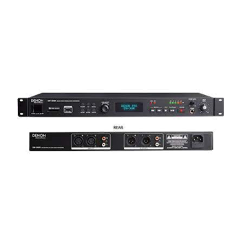

Recorder
DN-300RMKII
Solid-State SD/USB Audio Recorder
The DN-300RMKII records to both SD and USB media simultaneously – perfect for recording conferences where the client needs a copy of the recording after the event. With outstanding ease-of-use and simple operation, anyone can use the DN-300RMKII right out of the box and record to SD, USB, or both. Utilizing Dual Mono or Dual Stereo modes, the ability to record a second mono or stereo file at -10dB on the same media is supported.